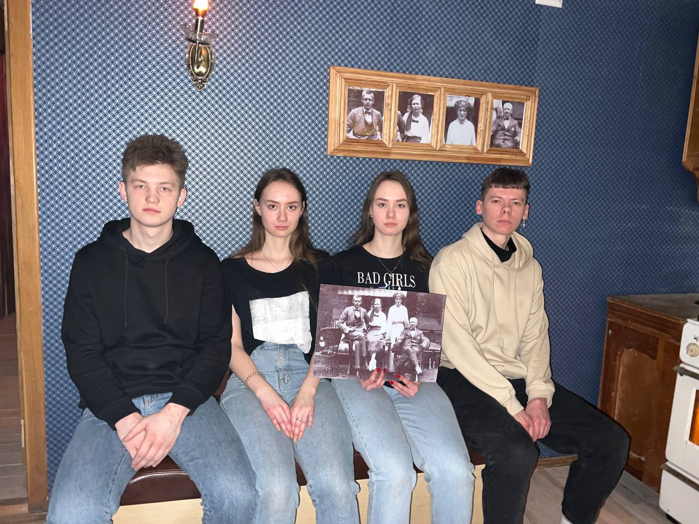
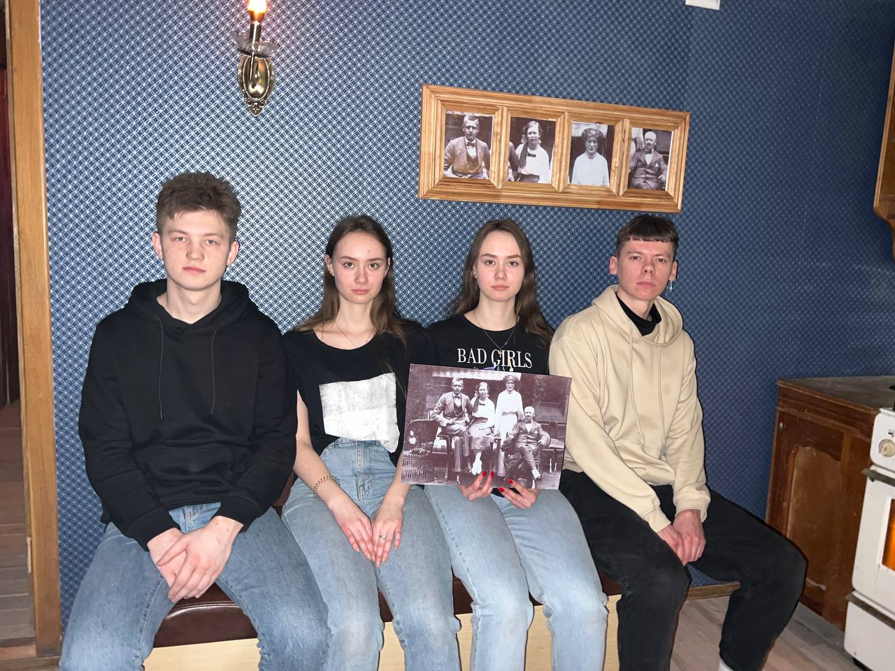

Вернуться на Главную страницу
#4 ОТДЫХ
1. Квест
 

Урааа, мы сходили на квест! Я очень хотела сходить именно с тобой. Да, согласна, "Техасская резня бензопилой" - не лучший квест, не такой страшный и сложный. Но я уверена, это первый, но не последний наш совместный квест!
До сих пор смеюсь, когда вспоминаю, что вместо того, чтобы лезть в потайную дыру, ты полез обратно в ящик. А ещё, когда ты пытался закрыть ящик, а Артур стоял и мешал тебе:)
Спасибо, что держал меня за руку и успокаивал, когда мы сидели в ящике, а актёр стучал по нему и пугал нас.
Уверена, ты частенько хочешь сделать это вживую! (Нажми на привидение)
👻👻👻
2. Речица
До встречи с тобой я ни разу не была в Речице. А теперь могу похвастаться, что была там уже 3 раза! (правда, фотографии с Я ЛЮБЛЮ РЕЧИЦУ у меня все ещё нет(().
Первый раз я приехала, когда ты отмечал свой ДР на коттедже. И так получилось, что я осталась у тебя дома на день-два. Ты познакомил меня со своими родителями.
Второй раз я приехала в августе (ох, помню, как летела на маршрутку и плача просила тебя позвонить водителю, чтобы тот меня подождал:)). О, вспомнила, как ты "добыл" мне яблоко и грушу по дороге к Шумику.
И вот третий раз был в январе. Да, я все ещё немного стесняюсь твоих родителей, но с каждым разом я привыкаю все больше и больше, ты заметил??
Да, я ворчу, что ты долго спишь, но это только потому что я так не могу. А ещё потому что хочу больше времени провести с тобой.
3. Квартира
Да, в эту карточку я решила добавить воспоминания из съёмной квартиры. Ты спросишь почему? А я тебе отвечу - благодаря тебе я очень отдохнула - и морально, и физически. Тогда на одну ночь я почувствовала себя маленькой девочкой, которая находится в безопасности благодаря своему мужчине. Я могла полностью расслабиться и ни о чем не переживать - ты взял всё на себя: поставил чайник, укрыл меня, гладил ножки. Не нужно было переживать, что нас кто-то потревожит.
Знаю, тебе очень нравится это видео, как и мне. Мы создали такой уют вокруг себя. Это было волшебно. Думаю, ты прочитал это в моих глазах.
Хочу, чтобы когда-нибудь в нашей квартире было так же уютно и тепло.